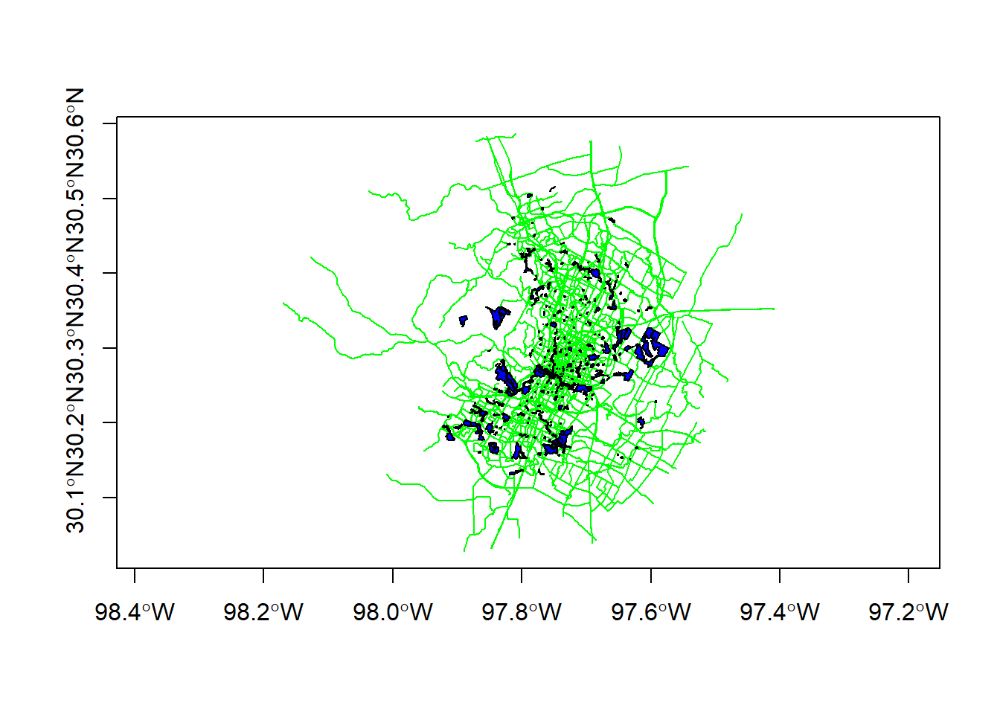

Chapter 6 Geoprocessing
6.1 Lesson Goals
A quick look at a couple typical topological operations (spatial subsetting, spatial joins, dissolve) using sf - followed by a couple ‘real world’ spatial tasks
6.2 Example one
6.2.1 Spatial Subsetting
Let’s look at the bike paths and parks data in the awra2020spatial package. A typical spatial question we might ask of our data is ‘what trails go through parks in town?’ A great feature of sf is it supports spatial indexing:
library(sf)
library(awra2020spatial)
data(parks)
data(bike_paths)
plot(bike_paths$geoms, col='green', axes=T)
plot(parks$geoms, col='blue', add=T)
paths_in_parks <- bike_paths[parks,]
plot(paths_in_parks$geoms, col='red', lwd = 2, add=T)
title(main='Bike Paths in Parks in Austin')
6.3 Spatial Join
First we’ll use chained operations to select just a couple columns from both bike_paths and parks, and then we’ll do a spatial join operation in sf. Note again, when we do a select on just attribute column, the geometry column remains - geometry is sticky in sf!
library(dplyr)
bike_paths <- bike_paths %>%
dplyr::select(ROUTE_NAME)
parks <- parks %>%
dplyr::select(LOCATION_NAME, ZIPCODE,PARK_TYPE)
parks_bike_paths <- st_join(parks, bike_paths) # st_intersects is the default
glimpse(parks_bike_paths)## Rows: 744
## Columns: 5
## $ LOCATION_NAME <chr> "Stratford Overlook Greenbelt", "Highland Neighborhood P~
## $ ZIPCODE <chr> "78746", "78752", "78703", "78753", "78724", "78702", "7~
## $ PARK_TYPE <chr> "Greenbelt", "Neighborhood", "Pocket", "Neighborhood", "~
## $ ROUTE_NAME <chr> NA, NA, NA, NA, NA, NA, "TOWN LAKE HIKE & BIKE TRAIL", "~
## $ geoms <MULTIPOLYGON [°]> MULTIPOLYGON (((-97.78802 3..., MULTIPOLYGO~6.4 Dissolve
We can perform a spatial dissolve in sf using dplyr group_by and summarize functions with an sf object!
Note that we could pull down tidycensus at tract level, but instead we want to look at running a dissolve to get from block group to tract level
library(ggplot2)
parks$AREA <- st_area(parks)
parks_zip <- parks %>%
group_by(ZIPCODE) %>%
summarise(AREA = sum(AREA)) %>%
ggplot() + geom_sf(aes(fill=(ZIPCODE))) +
ggtitle("Austin Parks by Zip Code") +
theme_bw()
parks_zip
6.5 Spatial Overlap
Here’s a fun example using material posted by Nicholas Tierney here that he put together based on this Stack Overflow discussion.
First we’ll extract the Portland Oregon metropolitan area using the tidycensus and tigris packages
library(ggplot2)
library(tidycensus)
library(tidyverse)
library(tigris)
tracts <- get_acs(geography = "tract", variables = "DP04_0134",
state = "OR", geometry = TRUE, progress_bar = FALSE)
pdx <- core_based_statistical_areas(cb = TRUE, progress_bar = FALSE) %>%
filter(GEOID == "38900")
ggplot() +
geom_sf(data = pdx,
fill = "forestgreen") 6.5.1 Next we’ll create a dummy spatial polygon file to compare area with using the rmapshaper package to simplify the border of the PDX metropolitan polygon
library(rmapshaper)
pdx_simplified <- pdx %>%
ms_simplify(keep = 0.01)6.5.2 Then we can overlay polygons in ggplot to see how similar they are, showing the original census PDX metropolitan area in green, and new simplified polygon in red
ggplot() +
geom_sf(data = pdx,
fill = "forestgreen", alpha = 0.5) +
geom_sf(data = pdx_simplified,
fill = "firebrick",
alpha = 0.5)
6.5.3 Now that we have an original and simplified polygon to compare, the process we want to use is:
- Calculate original metro area polygon area
- Calculate the intersection of these two areas - original and simplified (st_intersection)
- Calculate that area (st_area)
- Then only keep the relevant data again
We’ll run the steps then combine into a function
original_area <- pdx %>%
mutate(original_area = st_area(.)) %>%
select(NAME, original_area) %>%
st_drop_geometry()
intersection_area <- st_intersection(pdx, pdx_simplified) %>%
mutate(intersect_area = st_area(.)) %>%
select(NAME, intersect_area) %>%
st_drop_geometry()6.5.4 Exercise
This step should have given you an error -THIS IS VERY COMMON WORKING WITH SPATIAL DATA IN R AND USING sf.
6.5.5 Solution
pdx_simplified <- st_make_valid(pdx_simplified)
pdx <- st_make_valid(pdx)
original_area <- pdx %>%
mutate(original_area = st_area(.)) %>%
dplyr::select(NAME, original_area) %>%
st_drop_geometry()
intersection_area <- st_intersection(pdx, pdx_simplified) %>%
mutate(intersect_area = st_area(.)) %>%
select(NAME, intersect_area) %>%
st_drop_geometry()
# show the area of intersection
intersection_area## NAME intersect_area
## 1 Portland-Vancouver-Hillsboro, OR-WA 16524152114 [m^2]# show the proportion of overlap
intersection_area %>%
left_join(original_area,
by = "NAME") %>%
mutate(orig = as.numeric(original_area),
new = as.numeric(intersect_area),
proportion = (new / orig) * 100)## NAME intersect_area original_area
## 1 Portland-Vancouver-Hillsboro, OR-WA 16524152114 [m^2] 17633108214 [m^2]
## orig new proportion
## 1 17633108214 16524152114 93.710946.5.6 Challenge
Why did I use as.numeric in the mutate statement above?
6.5.6.1 Answer
Because sf will store area for features using units - which is convenient and forces you to be up front about units used, but you can’t do calculations with attributes stored as units - have to convert them to numeric
All steps rolled into a function
calculate_spatial_overlap <- function(shape_new,
shape_old,
shared_column_name) {
intersection_area <- st_intersection(shape_new, shape_old) %>%
mutate(intersect_area = st_area(.)) %>%
select(shared_column_name, intersect_area) %>%
st_drop_geometry()
# Create a fresh area variable
shape_old_areas <- shape_old %>%
mutate(original_area = st_area(.)) %>%
select(original_area, shared_column_name) %>%
st_drop_geometry()
intersection_area %>%
left_join(shape_old_areas,
by = shared_column_name) %>%
mutate(orig = as.numeric(original_area),
new = as.numeric(intersect_area),
proportion = (new / orig) * 100)
}
calculate_spatial_overlap(pdx, pdx_simplified, shared_column_name='NAME')## NAME intersect_area original_area
## 1 Portland-Vancouver-Hillsboro, OR-WA 16524152114 [m^2] 17295383068 [m^2]
## orig new proportion
## 1 17295383068 16524152114 95.54083